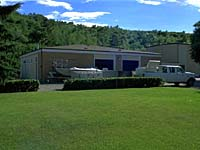
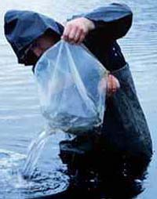

 The station is capable of rearing fish through their entire life cycle, from the egg stage through to adult. Depending on the species and other factors, station stock are distributed to receiving water bodies at virtually any of these stages; eyed eggs, fry, fingerlings, or adults. The vast majority are distributed at the advanced fry and fingerling stages.
|

The millions of annually stocked fish begin their lives as small eggs. The eggs are obtained from a brood stock kept at the station and from spawn camps, held by station staff each spring and fall at key locations, where adult spawning fish can be easily trapped. Eggs are stripped from the females into moist pans. Milt is then stripped from the males into the same pan to fertilize the eggs. This operation does not harm the fish and they are returned to the water body from which they were taken. The fertilized eggs are carefully packed and taken by truck or aircraft from the spawn camps to the Fish Culture Station. There, they are places in large containers filled with water where they begin the incubation stage. |
Three different methods of incubation can be used:
- Jar Culture Method - Species such as walleye and whitefish are raised using this method. The eggs are placed in glass jars of five quart capacity. Water from Echo Lake is circulated through the jars so that the eggs are constantly churned. The embryo gradually begins to develop within the egg and soon the eyes of the embryo appear as two dark spots. These are known as eyed eggs. The length of time it takes the eggs to hatch varies with the species. Walleye take roughly four weeks after fertilization to hatch. At that point, the embryonic walleye or sac fry breaks out of the egg with a large yolk from the egg still attached. The yolk sac provides nourishment for the growth of the sac fry which begins to develop mouth parts and fins as the sac gradually dissolves. The sac fry matures into as advanced fry; that is, a free-swimming, feeding fish, and is moved from the jars to a larger trough. With the yolk sac now gone, the fry must be fed artificially prepared food. In the meantime, the advanced fry grows into a fingerling, meaning a fish over one-inch in length, and the fingerling in turn matures into an adult.
- Trough Culture Incubation Method - The method is used for the various trout species raised at the station. The fertilized eggs are placed in wire baskets and suspended in troughs. Processed groundwater which is kept at a constant temperature is circulated through the eggs. Once the eggs hatch, the sac fry remain dormant at the bottom of the trough until the yolk sac is absorbed. At that point, the advanced fry swim to the surface of the water in search of food and proceed on through the fingerling and adult phases.
- Vertical Flow Incubation - This is another method used for trout. The eggs are placed in vertically stacked incubator trays. Water is pumped through the bottom of each tray to circulate through the eggs and then drops to the tray below. The advantage of this method compared to trough culture is that the same number of eggs can be incubated in a smaller amount of floor space, using less water. Fry are transferred from the trays to troughs at the advanced fry stage.
 Feeding of station stock begins at the advanced fry stage; that is, once the nutrients in the yolk sac have been used up. When ten per cent of the sac fry have reached the advanced stage, station staff begin providing artificially prepared food in the form of tiny granules which are high in protein and vitamins. Advanced fry are fed eight times a day on average, and given an amount which equals roughly six per cent of their body weight. Larger granules of food are used as the fry grow. Those fish which remain at the station through to the adult stage are fed twice a day with the pellet-sized food to about 1.5 per cent of their body weight. |